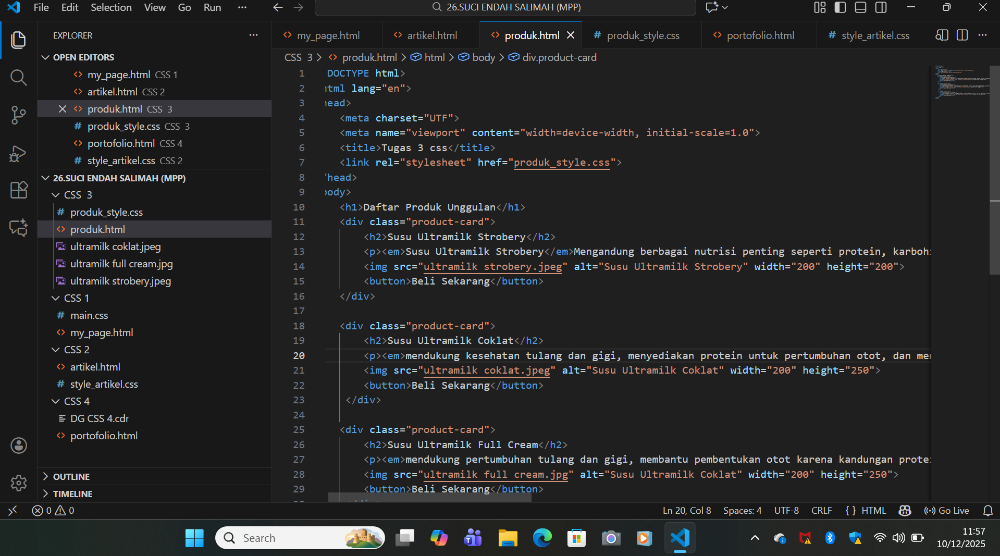
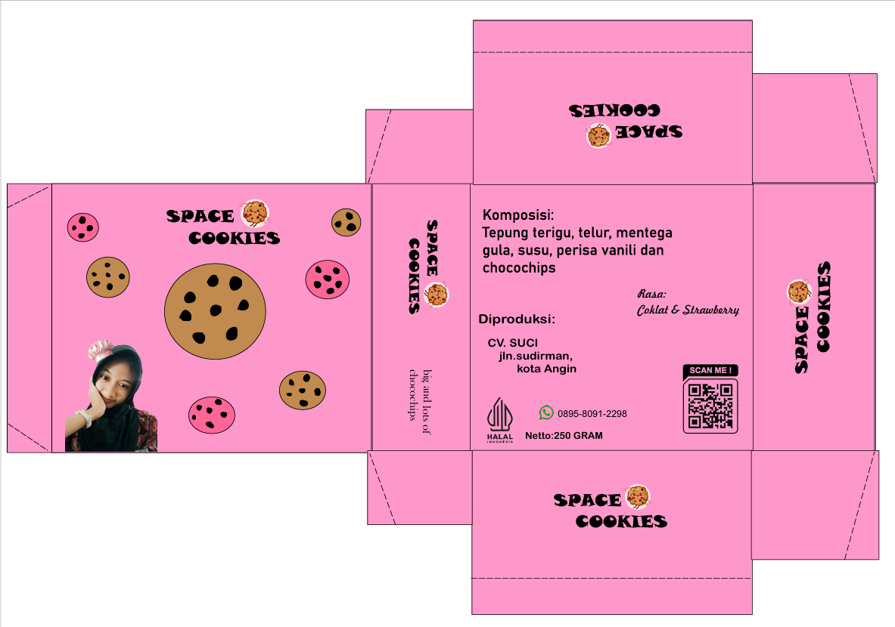

Pemrograman GIM
proses menulis kode menggunakan bahasa pemrograman (seperti C++, Java) untuk menciptakan gim video, mengubah ide desainer menjadi game yang bisa dimainkan dengan mengendalikan logika, karakter, grafis, suara, dan interaksi pemain
Desain Grafis
Desain grafis adalah seni komunikasi visual yang menggabungkan elemen seperti teks, gambar, warna, dan bentuk untuk menyampaikan pesan atau ide secara efektif kepada audiens, baik untuk tujuan komersial (merek, iklan) maupun non-komersial (informasi, pendidikan).
Animasi 3d
proses membuat gambar bergerak dalam ruang tiga dimensi (3D) menggunakan komputer, yang menciptakan objek dengan kedalaman, bayangan, dan perspektif sehingga tampak lebih realistis daripada animasi 2D